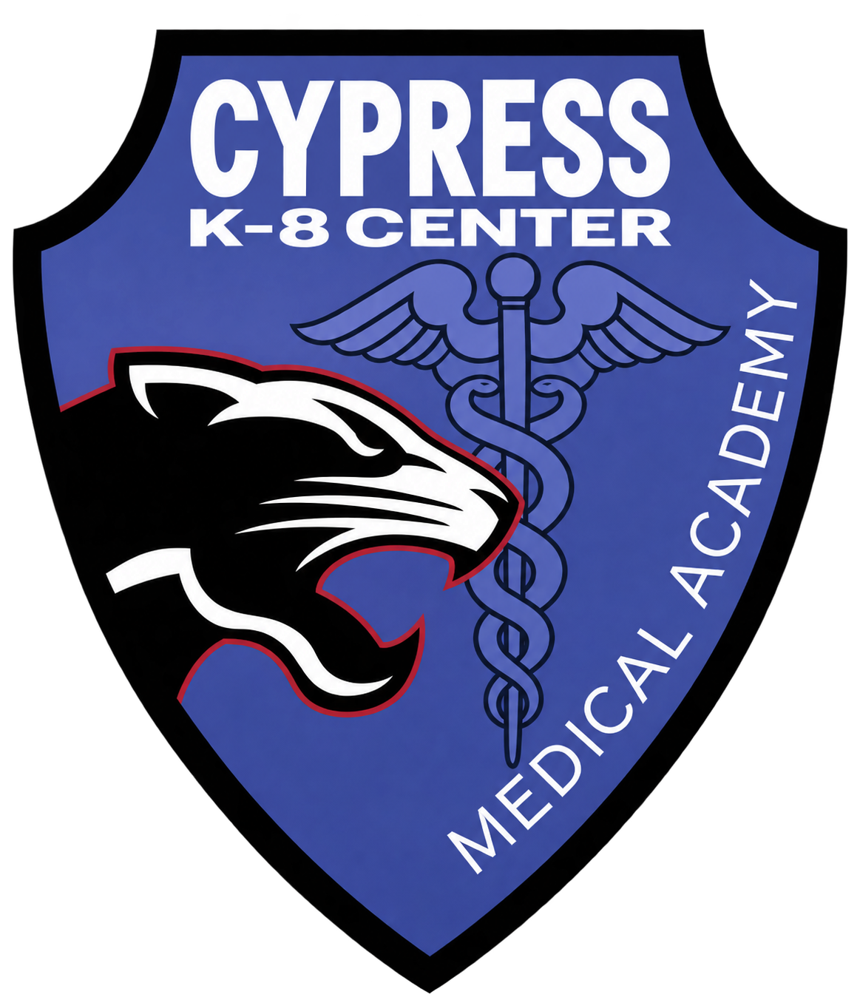
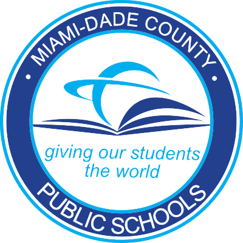
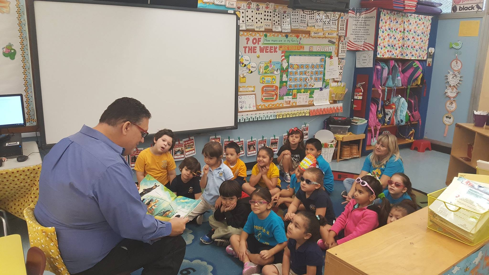
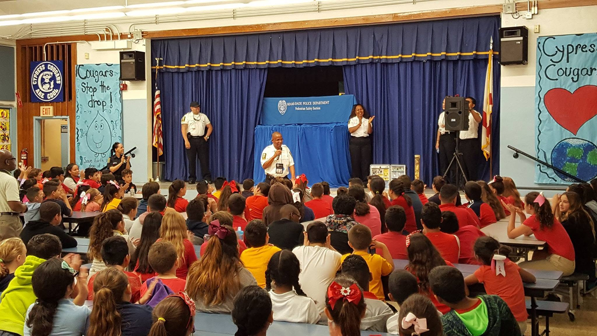
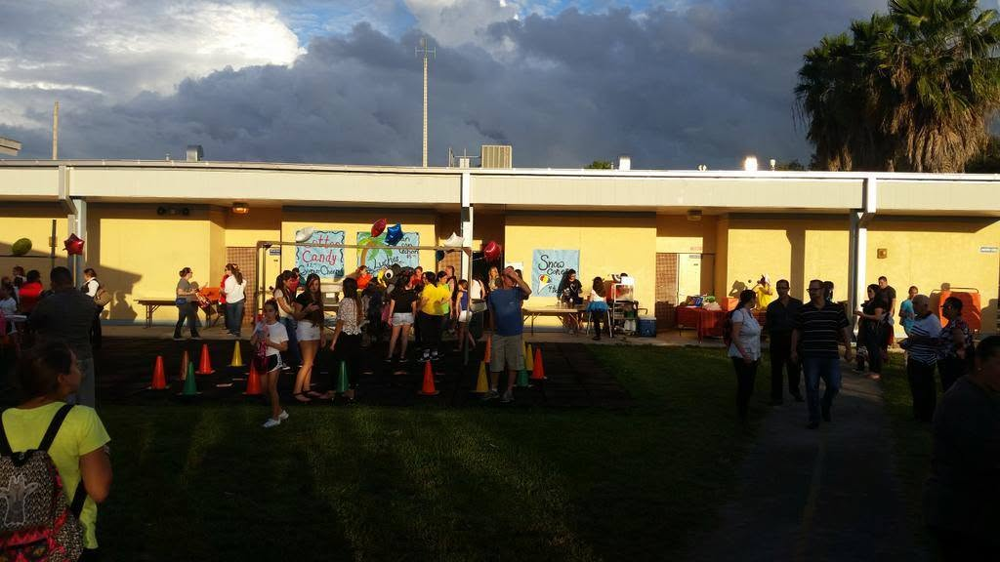

Clubs & student life
Robotics, chess, science, student government, and more.
Discover an inspiring school community where students learn, grow and thrive


OUR SCHOOL
At Cypress K–8 Center, students learn and grow in a supportive school community. Our mission emphasizes rigorous instruction, meaningful connections to everyday life, and positive relationships.
Learn about our school →

From learning together to celebrating together, school is about the people and experiences that shape every day
Discover our schoolDISCOVER CYPRESS
BEYOND THE CLASSROOM
Clubs, athletics, and enrichment opportunities help Cypress students explore their interests and build community.
Robotics, chess, science, student government, and more.
Basketball, soccer, softball, wrestling, and other opportunities.
Celebrating the school community's awards and achievements.
School Principal · Cypress K–8 Center
STAY CONNECTED
5400 SW 112th Court, Miami, FL 33165
